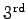

| PHOEBE keyword |
Type |
Short description |
HLALC |
adjustable |
Passband luminosity of primary star |
CLALC |
adjustable |
Passband luminosity of secondary star |
EL3 |
adjustable |
Third light |
EL3_FLUX |
boolean |
Is the  light in flux units |
OPSF |
adjustable |
Opacity function |
IPB_ON |
boolean |
Include proximity effects? |
NOISE_ON |
boolean |
Add synthetic scatter to LCs |
NOISE_TYPE |
string |
Synthetic scatter level weighting scheme |
NOISE_VAL |
real |
Synthetic scatter  |
SEED_VAL |
real |
Synthetic scatter RNG seed |
IFAT1_ON |
boolean |
Model atmosphere for primary star |
IFAT2_ON |
boolean |
Model atmosphere for secondary star |
MODELLGG_ON |
boolean |
Use gravity acceleration from the model |
NREF_ON |
boolean |
Detailed reflection effect |
NREF_VAL |
integer |
Number of reflections |
ICOR1_ON |
boolean |
luminosities icor1 switch ??? |
ICOR2_ON |
boolean |
luminosities icor1 switch ??? |